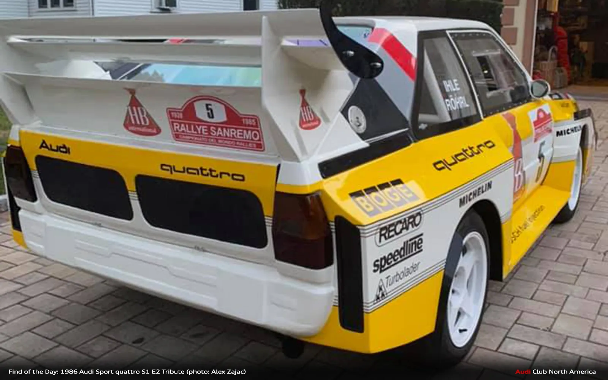

The story of the Audi Quattro began in 1977 when Audi engineer Jorg Bensinger proposed the idea of a high-performance car with AWD. The German company used an Audi 80 as a test mule and introduced the production model in 1980. Restricted to a two-door body style, the Quattro was powered by a 2.1-liter five-cylinder engine. Audi launched a rally-spec version of Quattro the same year. The car proved competitive from day one and brought Audi its first manufacturers' championship in 1982. Over the next couple of years, Hannu Mikkola and Stig Blomqvist turned the Quattro into a dominant force, winning head-to-head WRC championships. However, the Group B class became a more difficult challenge in 1985, when Peugeot and Lancia started rolling out mid-engined silhouette versions of the 205 and Delta, respectively. With the Quattro outclassed by the Peugeot 205 T16, Audi began working on a more extreme version of its rally car. Developed in a rather short space of time, the Quattro S1 E2 was a notable departure from its predecessor. It was not only based on a shorter wheelbase version of the coupe, but it also featured some wild aerodynamics. In fact, the S1 was the first rally car that used wings and splitters for downforce rather than balance. Compared to its A1 and A2 predecessors, the S1 also gained a central differential, while output increased to around 500 horsepower. Tipping the scales at only 1,090 kg (2,403 pounds), the Quattro S1 needed only three seconds to reach 60 mph (97 kph) from a standing start, quicker than supercars like the Ferrari 288 GTO and the Porsche 959.
Rally Cars
Audi Quattro

